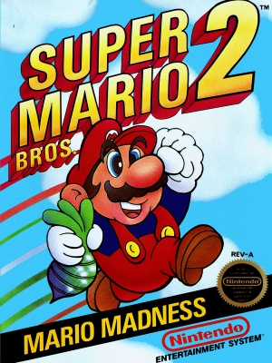

Super Mario Bros. 2
Una noche Mario tuvo un extraño sueño. Soñó con una larga, larga escalera que llevaba a una puerta. Tan pronto como la puerta se abrió se encontraba en un mundo que jamás había visto y que se extendía más allá de donde los ojos le permitían ver.